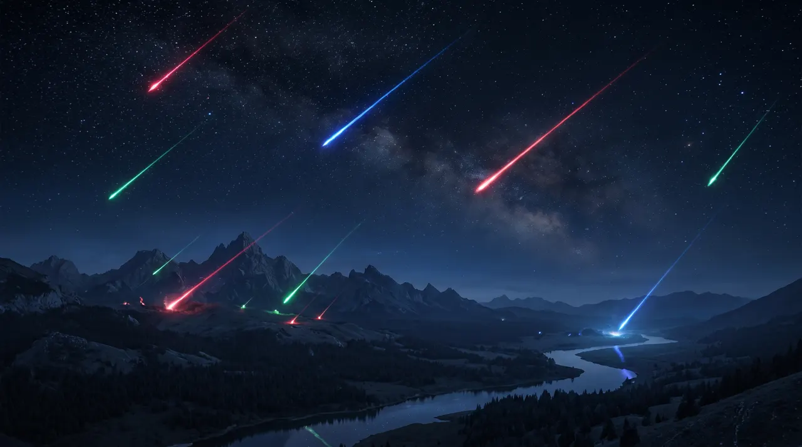
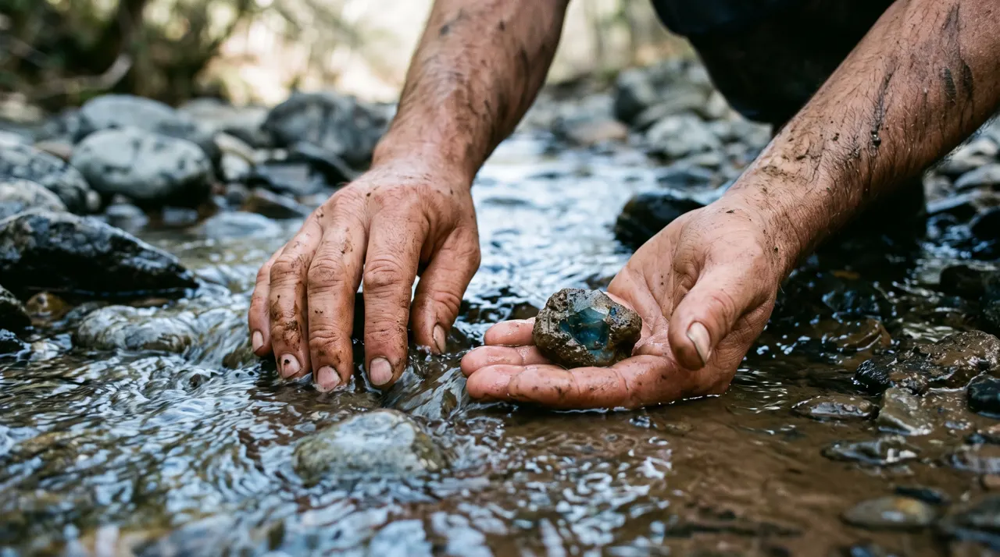
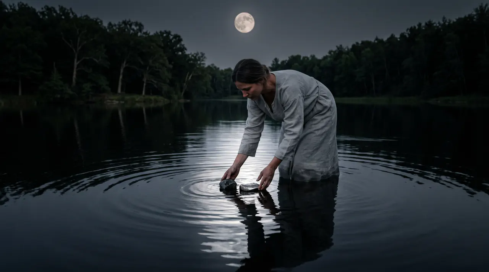
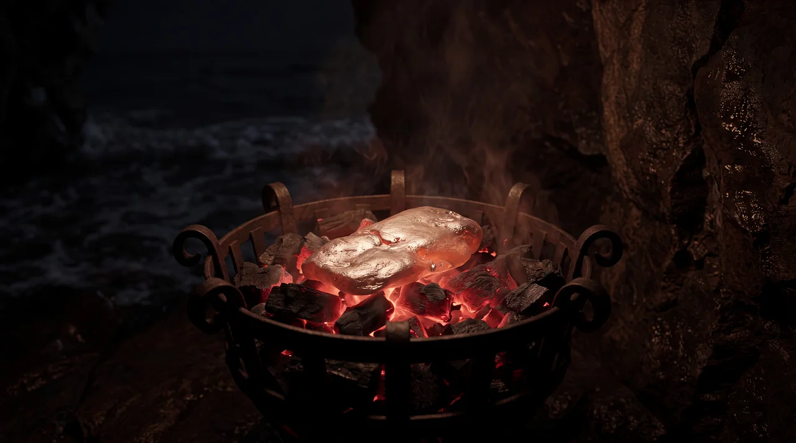
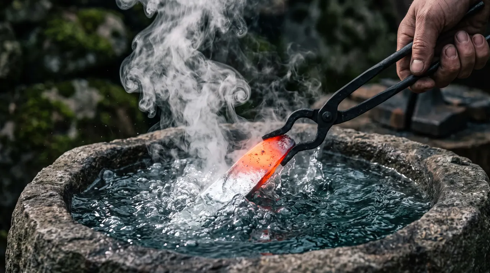

Jewels of Valloria
Hand-picked estate silver and gemstones, each with a story to tell.
Every piece finds its way home.
When the old crown broke, its light scattered across Valloria. Stone by stone, it was dug up by hand and set in silver by the master jewelers of Argenmere, with moonlight, fire and water.
Today we keep that search going. Every piece here is hand-picked estate and pre-loved sterling silver, chosen for its stones: tanzanite, topaz, garnet and the blues, purples, greens and embers of the four houses. Each one is photographed and described just as it is, and each comes with a little of its own legend.

The Crown BreaksIts light scatters across Valloria. 
Found by HandStone by stone, the light is gathered again. 
MoonlightThe master jewelers of Argenmere begin by moonlight, 
Fireshape the silver in fire, 
Waterand finish it in water.
Every piece has a story. Tell us yours.
Has a Vallorian piece found its way home to you? We'd love to hear where it landed. Leave a review on Etsy after your order arrives.
Shop & Contact
- Etsy shop
- Questions about a piece? Message us through Etsy, and we'll get back to you.